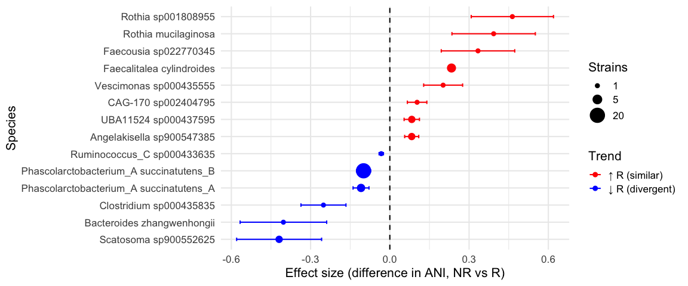
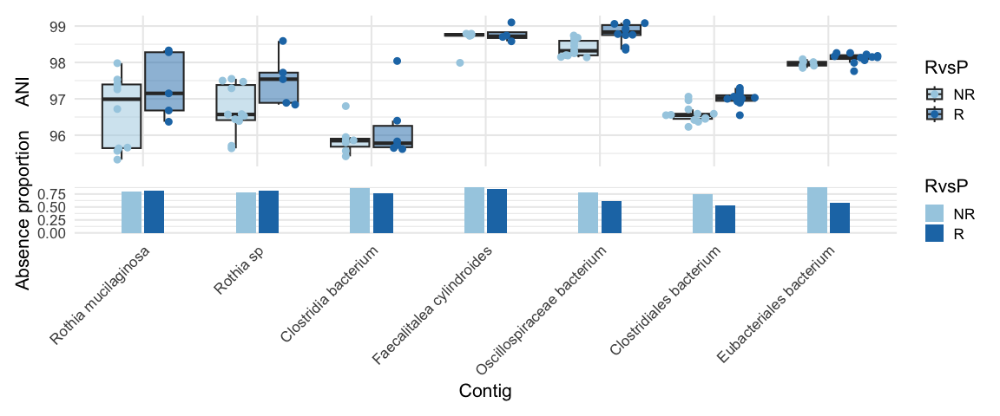
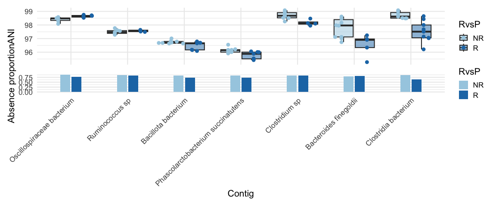
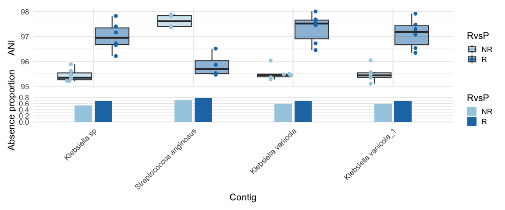
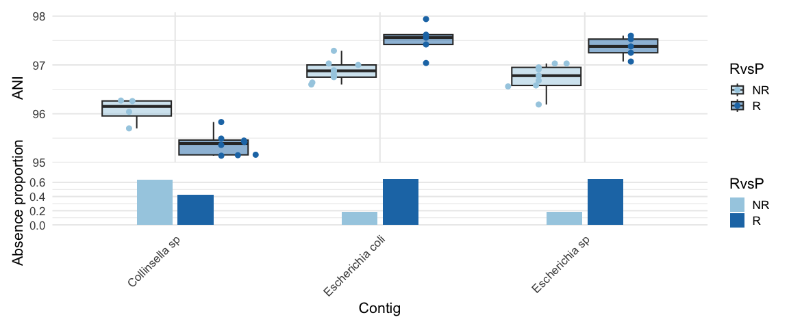
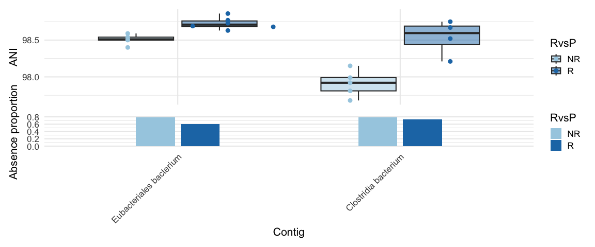
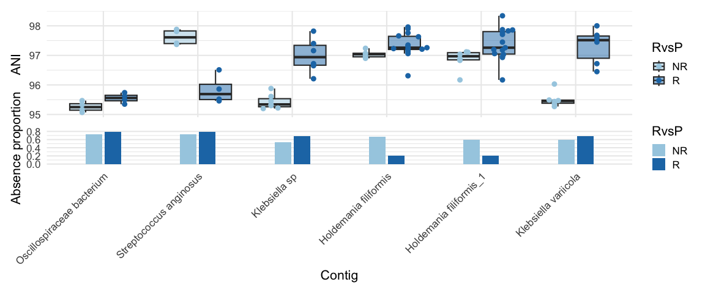
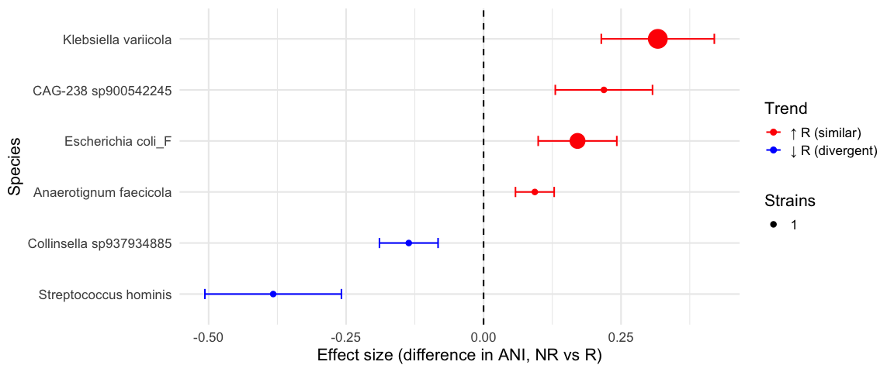

Associations between gut microbial strains and cancer immunotherapy outcomes - a study in rare cancers and melanoma ================ 2026-06-20
Load dependencies
library(strainspy)
library(SummarizedExperiment)
library(caret)
library(glmnet) # elastic net
library(ggrepel)
library(ranger) # RF
library(pROC)
library(doParallel)
library(foreach)
library(parallel)
library(ggplot2)
library(tidyr)
library(dplyr)
library(ggtree)
library(ggsci)Association testing
Classic StrainSpy applied to rare cancer and melanoma data in different combinations
Load the metadata for rare cancers
# Gunjur et al. data
meta_path_ash <- "./data/ash_pancancer/metadata_full.tsv"
meta_ash <- read.csv(meta_path_ash, sep = '\t')
meta_ash = cbind(run_acc = meta_ash$run_accession, meta_ash)
# Outcome
meta_ash$RvsP = "R"
meta_ash$RvsP[which(meta_ash$BOR == "PD" | meta_ash$BOR == "cPD")] = "NR"
meta_ash$RvsP = factor(meta_ash$RvsP, levels = c("NR", "R"))Load Sylph outputs
sy_ash <- read_sylph("./data/ash_pancancer/combined_q_99.tsv.gz") # q99)## Detected Sylph query output file.# annoying renames to match meta V sylph file
colnames(sy_ash) <- gsub("_1", "", colnames(sy_ash))
colData(sy_ash)$Sample_file <- gsub("_1", "", basename(colData(sy_ash)$Sample_file))
# Reorder meta_ash
meta_ash = meta_ash[match(colnames(sy_ash), meta_ash$run_accession), ]
# get rid of SD
rmidx = which(meta_ash$BOR == "SD")
if(length(rmidx) > 0){
meta_ash = meta_ash[-rmidx, ]
sy_ash = sy_ash[, -rmidx]
}
sy_ash <- filter_by_presence(sy_ash, min_nonzero = 8) # filter at 10%## Retained 19139 rows after filteringdim(sy_ash)## [1] 19139 77# Checks before merging metadata
all(colnames(sy_ash) %in% meta_ash$run_accession)## [1] TRUEall(meta_ash$run_accession %in% colnames(sy_ash))## [1] TRUEsy_ash = modify_metadata(sy_ash, meta_ash)Run StrainSpy
design <- as.formula("~ RvsP + histology_cohort.x + age + sex + BMI")
save_path <- "output_rds/ASH_zib_q_99_ebp.rds"
if(file.exists(save_path)){
ZB_fit <- readRDS(save_path)
} else {
# Run with weak prior for prediction
ebp = compute_eb_priors(sy_ash, design, nthreads = 10L, low_cutoff = 0, high_cutoff = Inf)
ZB_fit <- glmZiBFit(sy_ash, design, nthreads = parallel::detectCores(), MAP_prior = ebp)
saveRDS(ZB_fit, save_path)
}
# These are strainspy predictors from Pancx data
th = top_hits = top_hits(ZB_fit, coef = 2, alpha = 0.05)## Found 167 tophits for RvsPR at alpha = 0.05 using holmInspect StrainSpy hits species/genera
tax_99 = read_taxonomy("data/TAXONOMY/sylph_DB_taxonomy_99.tsv")
th_ph = comp_ani_diff_and_posthoc_test(sy_ash, ZB_fit, th)## | | | 0% | | | 1% | |= | 1% | |= | 2% | |== | 2% | |== | 3% | |=== | 4% | |=== | 5% | |==== | 5% | |==== | 6% | |===== | 7% | |===== | 8% | |====== | 8% | |====== | 9% | |======= | 10% | |======== | 11% | |======== | 12% | |========= | 13% | |========== | 14% | |========== | 15% | |=========== | 16% | |============ | 17% | |============= | 18% | |============= | 19% | |============== | 20% | |=============== | 21% | |=============== | 22% | |================ | 22% | |================ | 23% | |================= | 24% | |================= | 25% | |================== | 25% | |================== | 26% | |=================== | 27% | |=================== | 28% | |==================== | 28% | |==================== | 29% | |===================== | 29% | |===================== | 30% | |===================== | 31% | |====================== | 31% | |====================== | 32% | |======================= | 32% | |======================= | 33% | |======================= | 34% | |======================== | 34% | |======================== | 35% | |========================= | 35% | |========================= | 36% | |========================== | 37% | |========================== | 38% | |=========================== | 38% | |=========================== | 39% | |============================ | 40% | |============================= | 41% | |============================= | 42% | |============================== | 43% | |=============================== | 44% | |=============================== | 45% | |================================ | 46% | |================================= | 47% | |================================== | 48% | |================================== | 49% | |=================================== | 50% | |==================================== | 51% | |==================================== | 52% | |===================================== | 53% | |====================================== | 54% | |======================================= | 55% | |======================================= | 56% | |======================================== | 57% | |========================================= | 58% | |========================================= | 59% | |========================================== | 60% | |=========================================== | 61% | |=========================================== | 62% | |============================================ | 62% | |============================================ | 63% | |============================================= | 64% | |============================================= | 65% | |============================================== | 65% | |============================================== | 66% | |=============================================== | 66% | |=============================================== | 67% | |=============================================== | 68% | |================================================ | 68% | |================================================ | 69% | |================================================= | 69% | |================================================= | 70% | |================================================= | 71% | |================================================== | 71% | |================================================== | 72% | |=================================================== | 72% | |=================================================== | 73% | |==================================================== | 74% | |==================================================== | 75% | |===================================================== | 75% | |===================================================== | 76% | |====================================================== | 77% | |====================================================== | 78% | |======================================================= | 78% | |======================================================= | 79% | |======================================================== | 80% | |========================================================= | 81% | |========================================================= | 82% | |========================================================== | 83% | |=========================================================== | 84% | |============================================================ | 85% | |============================================================ | 86% | |============================================================= | 87% | |============================================================== | 88% | |============================================================== | 89% | |=============================================================== | 90% | |================================================================ | 91% | |================================================================ | 92% | |================================================================= | 92% | |================================================================= | 93% | |================================================================== | 94% | |================================================================== | 95% | |=================================================================== | 95% | |=================================================================== | 96% | |==================================================================== | 97% | |==================================================================== | 98% | |===================================================================== | 98% | |===================================================================== | 99% | |======================================================================| 99% | |======================================================================| 100%# Interestingly, these are all beta hits (differences in strain identity)
table(th_ph$hit_component)##
## beta
## 167th_ph_full = strainspy:::add_tax2tophits(th_ph, tax_99, c("Genus", "Species"))
tbl_full = table(th_ph_full$Species)
sort(tbl_full[tbl_full>5], decreasing = T)##
## Phascolarctobacterium_A succinatutens_B CAG-302 sp934162325
## 20 9
## Lachnoclostridium_B faecipullorum Ruminococcus_C callidus
## 9 6tbl_full = table(th_ph_full$Genus)
sort(tbl_full[tbl_full>5], decreasing = T)##
## Phascolarctobacterium_A Streptococcus Prevotella
## 23 20 13
## CAG-302 Lachnoclostridium_B Ruminococcus_C
## 12 9 7# Although there are interesting looking strains, we should remove poorly supported ones
th_ph_filt = th_ph_full[is.na(th_ph_full$Comment), ]
tbl = table(th_ph_filt$Species)
sort(tbl, decreasing = T)##
## Phascolarctobacterium_A succinatutens_B Faecalitalea cylindroides
## 20 4
## Phascolarctobacterium_A succinatutens_A Angelakisella sp900547385
## 3 2
## Scatosoma sp900552625 UBA11524 sp000437595
## 2 2
## Bacteroides zhangwenhongii CAG-170 sp002404795
## 1 1
## Clostridium sp000435835 Faecousia sp022770345
## 1 1
## Rothia mucilaginosa Rothia sp001808955
## 1 1
## Ruminococcus_C sp000433635 Vescimonas sp000435555
## 1 1tbl = table(th_ph_filt$Genus)
sort(tbl, decreasing = T)##
## Phascolarctobacterium_A Faecalitalea Angelakisella
## 23 4 2
## Rothia Scatosoma UBA11524
## 2 2 2
## Bacteroides CAG-170 Clostridium
## 1 1 1
## Faecousia Ruminococcus_C Vescimonas
## 1 1 1Inspect effect sizes
th_ph_ord = th_ph_filt[order(abs(th_ph_filt$ANI_Difference) , decreasing = T),]
summary_tbl <- th_ph_filt %>%
filter(!is.na(Species)) %>%
group_by(Species) %>%
summarise(
N_hits = n(),
Top_adj_p_beta = min(p_adjust, na.rm = TRUE),
Top_coef_beta = coefficient[which.min(p_adjust)],
Top_se_beta = std_error[which.min(p_adjust)],
Top_contig_beta = Contig_name[which.min(p_adjust)],
Top_adj_p_ZI = min(zi_p_adjust, na.rm = TRUE),
Top_coef_ZI = zi_coefficient[which.min(zi_p_adjust)],
Top_se_ZI = zi_std_error[which.min(zi_p_adjust)],
Top_contig_ZI = Contig_name[which.min(zi_p_adjust)],
.groups = "drop"
) %>%
mutate(
Min_adj_p = pmin(Top_adj_p_beta, Top_adj_p_ZI, na.rm = TRUE),
Dominant_component = ifelse(Top_adj_p_beta < Top_adj_p_ZI, "Beta", "ZI"),
Dominant_contig = ifelse(Dominant_component == "Beta", Top_contig_beta, Top_contig_ZI),
Dominant_coef = ifelse(Dominant_component == "Beta", Top_coef_beta, Top_coef_ZI),
Dominant_se = ifelse(Dominant_component == "Beta", Top_se_beta, Top_se_ZI)
) %>%
select(Species, N_hits, Dominant_component, Min_adj_p, Dominant_coef, Dominant_se, Dominant_contig) %>%
arrange(Min_adj_p)
beta_summary <- summary_tbl %>%
filter(Dominant_component == "Beta") %>%
arrange(Min_adj_p) %>%
mutate(
CI_low = Dominant_coef - 1.96 * Dominant_se,
CI_high = Dominant_coef + 1.96 * Dominant_se,
Trend = ifelse(Dominant_coef > 0, "\u2191 R (similar)", "\u2193 R (divergent)"),
Species = factor(Species, levels = rev(unique(Species)))
) %>%
arrange(desc(Dominant_coef)) %>%
mutate(Species = factor(Species, levels = rev(unique(Species))))
ggplot(beta_summary, aes(x = Dominant_coef, y = Species, color = Trend)) +
geom_point(aes(size = N_hits)) +
geom_errorbarh(aes(xmin = CI_low, xmax = CI_high), width = 0.2) +
geom_vline(xintercept = 0, linetype = "dashed") +
scale_color_manual(values = c("\u2191 R (similar)" = "red",
"\u2193 R (divergent)" = "blue")) +
scale_size_continuous(
name = "Strains",
range = c(2, 8),
breaks = c(1, 5, 20),
labels = c("1", "5", "20")
) +
labs(
x = "Effect size (difference in ANI, NR vs R)",
y = "Species",
color = "Trend"
) +
theme_minimal(base_size = 16)## Warning: `geom_errorbarh()` was deprecated in ggplot2 4.0.0.
## ℹ Please use the `orientation` argument of `geom_errorbar()` instead.
## This warning is displayed once per session.
## Call `lifecycle::last_lifecycle_warnings()` to see where this warning was
## generated.
# Some of these hits appear interesting
plot_ani_dist(sy_ash, 'RvsP', beta_summary$Dominant_contig[1:7])## Warning: Removed 422 rows containing non-finite outside the scale range
## (`stat_boxplot()`).
plot_ani_dist(sy_ash, 'RvsP', beta_summary$Dominant_contig[8:14])## Warning: Removed 443 rows containing non-finite outside the scale range
## (`stat_boxplot()`).
Hits in Rothia sp, specifically Rothia mucilaginosa, previously detected modulating CRC immunotherapy response - reported previously is an abundance (presence/absence) signal, but we see a difference in strain identity - https://journals.plos.org/plosone/article?id=10.1371/journal.pone.0307639
Hits in Phascolarctobacterium and Ruminococcus have been previously detected modulating lung cancer immunotherapy response - https://link.springer.com/article/10.1186/s40164-023-00442-x
Bacteroides sp. - well studied and understood role in modulating CTLA-4 blockade - https://www.science.org/doi/10.1126/science.aad1329 - our hit is from a weird and less known species - but the genus is correct. ANI can theoretically tag links like this.
There are some other papers discussing Phascolarctobacterium and Clostridium hits, but they don’t look very specific and our hits are again from not well classified species (https://www.nature.com/articles/s41586-019-0878-z, https://www.nature.com/articles/s41591-022-01694-6, https://www.tandfonline.com/doi/full/10.1080/2162402X.2022.2081010)
Rare cancer + Melanoma - combined dataset
meta_path <- "./data/ash_pancancer/metadata_full.tsv"
meta_pan <- read.csv(meta_path, sep = '\t')
meta_pan = cbind(run_acc = meta_pan$run_accession, meta_pan)
# From paper:
# RvsP = CR or PR VS. PD or cPD - excluded patients with a BOR of stable disease (SD) (n=29)
# Outcome
meta_pan$RvsP = "R"
meta_pan$RvsP[which(meta_pan$BOR == "PD" | meta_pan$BOR == "cPD")] = "NR"
meta_pan$RvsP = factor(meta_pan$RvsP, levels = c("NR", "R"))
# Melanoma meta
meta_m = read.csv("data/melanoma_pooled/meta_melanoma_sm.csv")
meta = rbind(data.frame(X = meta_pan$run_acc, c_type = "RARE", type = meta_pan$histology_cohort.x, therapy_type = "combination", RvsP = meta_pan$RvsP),
data.frame(X = meta_m$X, c_type = "MEL", type = meta_m$Study_simplified, therapy_type = meta_m$ICB, RvsP = meta_m$ORR))
meta$therapy_type <- ifelse(meta$therapy_type %in% c("aPD1/aCTLA", "combination"), "CICB", ifelse(meta$therapy_type == "aPD1", "PD1", "other"))
meta$therapy_type[is.na(meta$therapy_type)] = "other" # Get this of the NAs
sy <- read_sylph("./data/ash_pancancer/merged_pan_melanoma.tsv.gz") # q99)## Detected Sylph query output file.# annoying renames to match meta V sylph file
colnames(sy) <- gsub("_1", "", colnames(sy))
colData(sy)$Sample_file <- gsub("_1", "", basename(colData(sy)$Sample_file))
# Reorder meta
meta = meta[match(colnames(sy), meta$X), ]
sy <- filter_by_presence(sy, min_nonzero = 53) # filter at 10%## Retained 19691 rows after filteringdim(sy)## [1] 19691 526# Checks before merging metadata
all(colnames(sy) %in% meta$X)## [1] TRUEall(meta$X %in% colnames(sy))## [1] TRUEsy = modify_metadata(sy, meta, replace = T)Other association tests
#### DO NOT RE-RUN BELOW - NO HITS ####
## Full dataset (526 samples) ### No hits for this ##
# design <- as.formula("~ RvsP") # no hits
# design <- as.formula("~ RvsP + c_type") # no hits
# design <- as.formula("~ RvsP + type") # no hits
# design <- as.formula("~ RvsP + type + therapy_type") # no hits
#
# if(file.exists(save_path)){
# ZB_fit <- readRDS(save_path)
# } else {
# # Run with weak prior for prediction
# ebp = compute_eb_priors(sy, design, nthreads = 10L, low_cutoff = 0, high_cutoff = Inf)
# ZB_fit <- glmZiBFit(sy, design, nthreads = parallel::detectCores(), MAP_prior = ebp)
# saveRDS(ZB_fit, save_path)
# }
# Drop Spencer and retry (359 samples)
# sy_nospecer = sy[,sy$type!="Spencer_2021"]
# sy_nospecer <- filter_by_presence(sy_nospecer, min_nonzero = 36) # filter at 10%
#
# # Drop rare cancers + spencer and retry
# sy_nospecer_norare = sy_nospecer[,sy_nospecer$c_type!="RARE"]
# sy_nospecer_norare <- filter_by_presence(sy_nospecer_norare, min_nonzero = 25) # filter at 10%
#
# design <- as.formula("~ RvsP + type + therapy_type") # still no hits
#
# save_path <- "output_rds/ASH+mela_zib_q_99_ebp.rds"
#
# if(file.exists(save_path)){
# ZB_fit <- readRDS(save_path)
# } else {
# # Run with weak prior for prediction
# ebp = compute_eb_priors(sy_nospecer_norare, design, nthreads = 10L, low_cutoff = 0, high_cutoff = Inf)
# ZB_fit <- glmZiBFit(sy_nospecer_norare, design, nthreads = parallel::detectCores(), MAP_prior = ebp)
# saveRDS(ZB_fit, save_path)
# }
# Try individual melanoma datasets as well - There are some hits here
op_th_melanoma_ind = data.frame()
sets = c("Frankel_2017","Gopalakrishnan_2018","Lee_2022","Matson_2018","McCulloch_2022","Spencer_2021")
design <- as.formula("~ RvsP")
for (set in sets){
sy1 = sy[,which(sy$type == set)]
dim(sy1)
sy1 = filter_by_presence(sy1, ceiling(dim(sy1)[2]/10))
save_path <- file.path("output_rds", paste("melanoma_", set, ".rds", sep = ""))
# design <- as.formula("~ RvsP") # no hits
if(file.exists(save_path)){
ZB_fit <- readRDS(save_path)
} else {
# Run with weak prior for prediction
ebp = compute_eb_priors(sy1, design, nthreads = 10L, low_cutoff = 0, high_cutoff = Inf)
ZB_fit <- glmZiBFit(sy1, design, nthreads = parallel::detectCores(), MAP_prior = ebp)
saveRDS(ZB_fit, save_path)
}
th_out = top_hits(ZB_fit)
if(nrow(th_out) > 0)
{
th_out = comp_ani_diff_and_posthoc_test(sy1, ZB_fit, th_out) # drop poorly supported ones on the fly
op_th_melanoma_ind = rbind(op_th_melanoma_ind,
cbind(th_out, dset = set)
)
}
}## Retained 18865 rows after filtering
## Found 37 tophits for RvsPR at alpha = 0.05 using holm
## | | | 0% | |== | 3% | |==== | 5% | |====== | 8% | |======== | 11% | |========= | 14% | |=========== | 16% | |============= | 19% | |=============== | 22% | |================= | 24% | |=================== | 27% | |===================== | 30% | |======================= | 32% | |========================= | 35% | |========================== | 38% | |============================ | 41% | |============================== | 43% | |================================ | 46% | |================================== | 49% | |==================================== | 51% | |====================================== | 54% | |======================================== | 57% | |========================================== | 59% | |============================================ | 62% | |============================================= | 65% | |=============================================== | 68% | |================================================= | 70% | |=================================================== | 73% | |===================================================== | 76% | |======================================================= | 78% | |========================================================= | 81% | |=========================================================== | 84% | |============================================================= | 86% | |============================================================== | 89% | |================================================================ | 92% | |================================================================== | 95% | |==================================================================== | 97% | |======================================================================| 100%
##
## Retained 15631 rows after filtering
## Found 305 tophits for RvsPR at alpha = 0.05 using holm
## | | | 0% | | | 1% | |= | 1% | |= | 2% | |== | 2% | |== | 3% | |=== | 4% | |=== | 5% | |==== | 5% | |==== | 6% | |===== | 7% | |===== | 8% | |====== | 8% | |====== | 9% | |======= | 10% | |======== | 11% | |======== | 12% | |========= | 12% | |========= | 13% | |========== | 14% | |========== | 15% | |=========== | 15% | |=========== | 16% | |============ | 17% | |============ | 18% | |============= | 18% | |============= | 19% | |============== | 19% | |============== | 20% | |============== | 21% | |=============== | 21% | |=============== | 22% | |================ | 22% | |================ | 23% | |================= | 24% | |================= | 25% | |================== | 25% | |================== | 26% | |=================== | 27% | |=================== | 28% | |==================== | 28% | |==================== | 29% | |===================== | 30% | |====================== | 31% | |====================== | 32% | |======================= | 32% | |======================= | 33% | |======================== | 34% | |======================== | 35% | |========================= | 35% | |========================= | 36% | |========================== | 37% | |========================== | 38% | |=========================== | 38% | |=========================== | 39% | |============================ | 39% | |============================ | 40% | |============================ | 41% | |============================= | 41% | |============================= | 42% | |============================== | 42% | |============================== | 43% | |=============================== | 44% | |=============================== | 45% | |================================ | 45% | |================================ | 46% | |================================= | 47% | |================================= | 48% | |================================== | 48% | |================================== | 49% | |=================================== | 50% | |==================================== | 51% | |==================================== | 52% | |===================================== | 52% | |===================================== | 53% | |====================================== | 54% | |====================================== | 55% | |======================================= | 55% | |======================================= | 56% | |======================================== | 57% | |======================================== | 58% | |========================================= | 58% | |========================================= | 59% | |========================================== | 59% | |========================================== | 60% | |========================================== | 61% | |=========================================== | 61% | |=========================================== | 62% | |============================================ | 62% | |============================================ | 63% | |============================================= | 64% | |============================================= | 65% | |============================================== | 65% | |============================================== | 66% | |=============================================== | 67% | |=============================================== | 68% | |================================================ | 68% | |================================================ | 69% | |================================================= | 70% | |================================================== | 71% | |================================================== | 72% | |=================================================== | 72% | |=================================================== | 73% | |==================================================== | 74% | |==================================================== | 75% | |===================================================== | 75% | |===================================================== | 76% | |====================================================== | 77% | |====================================================== | 78% | |======================================================= | 78% | |======================================================= | 79% | |======================================================== | 79% | |======================================================== | 80% | |======================================================== | 81% | |========================================================= | 81% | |========================================================= | 82% | |========================================================== | 82% | |========================================================== | 83% | |=========================================================== | 84% | |=========================================================== | 85% | |============================================================ | 85% | |============================================================ | 86% | |============================================================= | 87% | |============================================================= | 88% | |============================================================== | 88% | |============================================================== | 89% | |=============================================================== | 90% | |================================================================ | 91% | |================================================================ | 92% | |================================================================= | 92% | |================================================================= | 93% | |================================================================== | 94% | |================================================================== | 95% | |=================================================================== | 95% | |=================================================================== | 96% | |==================================================================== | 97% | |==================================================================== | 98% | |===================================================================== | 98% | |===================================================================== | 99% | |======================================================================| 99% | |======================================================================| 100%
##
## Retained 19319 rows after filtering
## Warning in top_hits(ZB_fit): Multiple testing correction using `holm`: No
## significant associations detected for coef = 2 at alpha = 0.050000
## Retained 17963 rows after filtering
## Found 44 tophits for RvsPR at alpha = 0.05 using holm
## | | | 0% | |== | 2% | |=== | 5% | |===== | 7% | |====== | 9% | |======== | 11% | |========== | 14% | |=========== | 16% | |============= | 18% | |============== | 20% | |================ | 23% | |================== | 25% | |=================== | 27% | |===================== | 30% | |====================== | 32% | |======================== | 34% | |========================= | 36% | |=========================== | 39% | |============================= | 41% | |============================== | 43% | |================================ | 45% | |================================= | 48% | |=================================== | 50% | |===================================== | 52% | |====================================== | 55% | |======================================== | 57% | |========================================= | 59% | |=========================================== | 61% | |============================================= | 64% | |============================================== | 66% | |================================================ | 68% | |================================================= | 70% | |=================================================== | 73% | |==================================================== | 75% | |====================================================== | 77% | |======================================================== | 80% | |========================================================= | 82% | |=========================================================== | 84% | |============================================================ | 86% | |============================================================== | 89% | |================================================================ | 91% | |================================================================= | 93% | |=================================================================== | 95% | |==================================================================== | 98% | |======================================================================| 100%
##
## Retained 18582 rows after filtering
## Found 3 tophits for RvsPR at alpha = 0.05 using holm
## | | | 0% | |======================= | 33% | |=============================================== | 67% | |======================================================================| 100%
##
## Retained 16037 rows after filtering
## Warning in top_hits(ZB_fit): Multiple testing correction using `holm`: No
## significant associations detected for coef = 2 at alpha = 0.050000op_th_melanoma_ind = op_th_melanoma_ind[is.na(op_th_melanoma_ind$Comment), ]
op_th_melanoma_ind = strainspy:::add_tax2tophits(op_th_melanoma_ind, taxonomy = tax_99, c("Genus", "Species"))Looks like there are some hits in (1) Frankel_2017 (2) Gopalakrishnan_2018 (3) Matson_2018
Visualise
plot_ani_dist(sy[,which(sy$type == "Frankel_2017")], phenotype = 'RvsP', op_th_melanoma_ind$Contig_name[op_th_melanoma_ind$dset == "Frankel_2017"])## Warning: Removed 91 rows containing non-finite outside the scale range
## (`stat_boxplot()`).
plot_ani_dist(sy[,which(sy$type == "Gopalakrishnan_2018")], phenotype = 'RvsP', op_th_melanoma_ind$Contig_name[op_th_melanoma_ind$dset == "Gopalakrishnan_2018"])## Warning: Removed 35 rows containing non-finite outside the scale range
## (`stat_boxplot()`).
plot_ani_dist(sy[,which(sy$type == "Matson_2018")], phenotype = 'RvsP', op_th_melanoma_ind$Contig_name[op_th_melanoma_ind$dset == "Matson_2018"])## Warning: Removed 58 rows containing non-finite outside the scale range
## (`stat_boxplot()`).
They look a bit different. Retest with therapy type as a covariate
op_th_melanoma_ind_tt = data.frame()
sets = c("Frankel_2017","Gopalakrishnan_2018","Lee_2022","Matson_2018","McCulloch_2022","Spencer_2021")
design <- as.formula("~ RvsP + therapy_type")
for (set in sets){
sy1 = sy[,which(sy$type == set)]
dim(sy1)
sy1 = filter_by_presence(sy1, ceiling(dim(sy1)[2]/10))
ttbl = table(sy1$therapy_type)
if(min(c( ttbl[['CICB']], ttbl[['PD1']])) > 0.1*dim(sy1)[2]){ # 10% minimum rule
save_path <- file.path("output_rds", paste("melanoma_tt_", set, ".rds", sep = ""))
# design <- as.formula("~ RvsP") # no hits
if(file.exists(save_path)){
ZB_fit <- readRDS(save_path)
} else {
# Run with weak prior for prediction
ebp = compute_eb_priors(sy1, design, nthreads = 10L, low_cutoff = 0, high_cutoff = Inf)
ZB_fit <- glmZiBFit(sy1, design, nthreads = parallel::detectCores(), MAP_prior = ebp)
saveRDS(ZB_fit, save_path)
}
th_out = top_hits(ZB_fit)
if(nrow(th_out) > 0)
{
th_out = comp_ani_diff_and_posthoc_test(sy1, ZB_fit, th_out) # drop poorly supported ones on the fly
op_th_melanoma_ind_tt = rbind(op_th_melanoma_ind_tt,
cbind(th_out, dset = set)
)
}
} else {
cat("Not enough samples for the two therapy types")
}
}## Retained 18865 rows after filtering
## Found 69 tophits for RvsPR at alpha = 0.05 using holm
## | | | 0% | |= | 1% | |== | 3% | |=== | 4% | |==== | 6% | |===== | 7% | |====== | 9% | |======= | 10% | |======== | 12% | |========= | 13% | |========== | 14% | |=========== | 16% | |============ | 17% | |============= | 19% | |============== | 20% | |=============== | 22% | |================ | 23% | |================= | 25% | |================== | 26% | |=================== | 28% | |==================== | 29% | |===================== | 30% | |====================== | 32% | |======================= | 33% | |======================== | 35% | |========================= | 36% | |========================== | 38% | |=========================== | 39% | |============================ | 41% | |============================= | 42% | |============================== | 43% | |=============================== | 45% | |================================ | 46% | |================================= | 48% | |================================== | 49% | |==================================== | 51% | |===================================== | 52% | |====================================== | 54% | |======================================= | 55% | |======================================== | 57% | |========================================= | 58% | |========================================== | 59% | |=========================================== | 61% | |============================================ | 62% | |============================================= | 64% | |============================================== | 65% | |=============================================== | 67% | |================================================ | 68% | |================================================= | 70% | |================================================== | 71% | |=================================================== | 72% | |==================================================== | 74% | |===================================================== | 75% | |====================================================== | 77% | |======================================================= | 78% | |======================================================== | 80% | |========================================================= | 81% | |========================================================== | 83% | |=========================================================== | 84% | |============================================================ | 86% | |============================================================= | 87% | |============================================================== | 88% | |=============================================================== | 90% | |================================================================ | 91% | |================================================================= | 93% | |================================================================== | 94% | |=================================================================== | 96% | |==================================================================== | 97% | |===================================================================== | 99% | |======================================================================| 100%
##
## Retained 15631 rows after filtering
## Not enough samples for the two therapy typesRetained 19319 rows after filtering
## Warning in top_hits(ZB_fit): Multiple testing correction using `holm`: No
## significant associations detected for coef = 2 at alpha = 0.050000
## Retained 17963 rows after filtering
## Not enough samples for the two therapy typesRetained 18582 rows after filtering
## Not enough samples for the two therapy typesRetained 16037 rows after filtering
## Not enough samples for the two therapy typesop_th_melanoma_ind_tt = op_th_melanoma_ind_tt[is.na(op_th_melanoma_ind_tt$Comment), ]
op_th_melanoma_ind_tt = strainspy:::add_tax2tophits(op_th_melanoma_ind_tt, taxonomy = tax_99, c("Genus", "Species"))
# Only hits in Frankel
plot_ani_dist(sy[,which(sy$type == "Frankel_2017")], phenotype = 'RvsP', op_th_melanoma_ind_tt$Contig_name[op_th_melanoma_ind_tt$dset == "Frankel_2017"])## Warning: Removed 122 rows containing non-finite outside the scale range
## (`stat_boxplot()`).
Summary plots
summary_tbl_mel <- op_th_melanoma_ind %>%
filter(!is.na(Species)) %>%
group_by(Species) %>%
summarise(
N_hits = n(),
Top_adj_p_beta = min(p_adjust, na.rm = TRUE),
Top_coef_beta = coefficient[which.min(p_adjust)],
Top_se_beta = std_error[which.min(p_adjust)],
Top_contig_beta = Contig_name[which.min(p_adjust)],
Top_adj_p_ZI = min(zi_p_adjust, na.rm = TRUE),
Top_coef_ZI = zi_coefficient[which.min(zi_p_adjust)],
Top_se_ZI = zi_std_error[which.min(zi_p_adjust)],
Top_contig_ZI = Contig_name[which.min(zi_p_adjust)],
.groups = "drop"
) %>%
mutate(
Min_adj_p = pmin(Top_adj_p_beta, Top_adj_p_ZI, na.rm = TRUE),
Dominant_component = ifelse(Top_adj_p_beta < Top_adj_p_ZI, "Beta", "ZI"),
Dominant_contig = ifelse(Dominant_component == "Beta", Top_contig_beta, Top_contig_ZI),
Dominant_coef = ifelse(Dominant_component == "Beta", Top_coef_beta, Top_coef_ZI),
Dominant_se = ifelse(Dominant_component == "Beta", Top_se_beta, Top_se_ZI)
) %>%
select(Species, N_hits, Dominant_component, Min_adj_p, Dominant_coef, Dominant_se, Dominant_contig) %>%
arrange(Min_adj_p)
beta_summary_mel <- summary_tbl_mel %>%
filter(Dominant_component == "Beta") %>%
arrange(Min_adj_p) %>%
mutate(
CI_low = Dominant_coef - 1.96 * Dominant_se,
CI_high = Dominant_coef + 1.96 * Dominant_se,
Trend = ifelse(Dominant_coef > 0, "\u2191 R (similar)", "\u2193 R (divergent)"),
Species = factor(Species, levels = rev(unique(Species)))
) %>%
arrange(desc(Dominant_coef)) %>%
mutate(Species = factor(Species, levels = rev(unique(Species))))
ggplot(beta_summary_mel, aes(x = Dominant_coef, y = Species, color = Trend)) +
geom_point(aes(size = N_hits)) +
geom_errorbarh(aes(xmin = CI_low, xmax = CI_high), width = 0.2) +
geom_vline(xintercept = 0, linetype = "dashed") +
scale_color_manual(values = c("\u2191 R (similar)" = "red",
"\u2193 R (divergent)" = "blue")) +
scale_size_continuous(
name = "Strains",
range = c(2, 8),
breaks = c(1, 5, 20),
labels = c("1", "5", "20")
) +
labs(
x = "Effect size (difference in ANI, NR vs R)",
y = "Species",
color = "Trend"
) +
theme_minimal(base_size = 16)